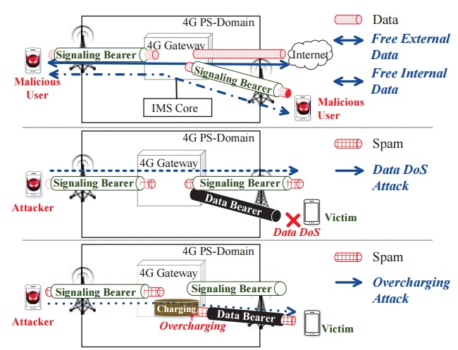
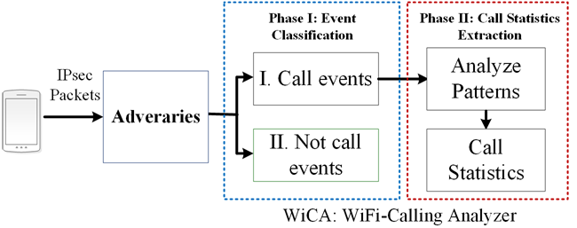
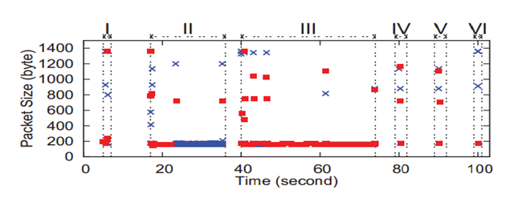
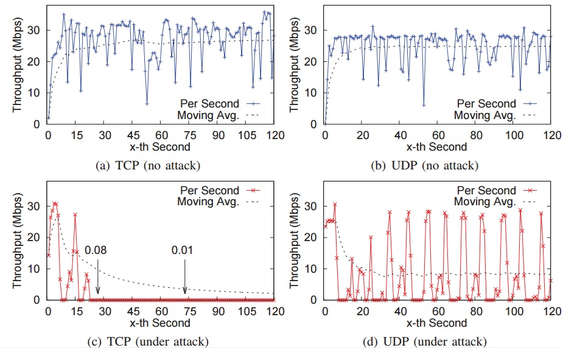

Guan-Hua (Scott) Tu
Associate Professor
Department of Computer Science and Engineering,
Michigan State University
428 S SHAW LN, ROOM 3115
East Lansing, MI 48824-1266
Email: ghtu AT msu.edu
Office: 1124 Engineering Building
My CV
Voice Service Security
- The Dark Side of Operational Wi-Fi Calling Services [CNS'18, best paper award]
- WiCA (WiFi Calling Analyzer) (Discover six WiFi calling events)
- Six WiFi calling events (I: Activating Wi-Fi calling service, II: Receiving an incoming call, III: Dialing an outgoing call, IV: Sending a text, V: Receiving a text, VI: Deactivating Wi-Fi calling service)
- New Security Threats towards Data Service by Exploiting Control-Plane of Voice Services [MOBICOM'13, CCS'15, CNS'15]
- Ping-Pong Attack (Tear down all TCP connections within few minutes and largely downgrade UDP throughput)
- Free-Data-Service, Data Dos, Overbilling, Voice Muted Attacks (Abuse VoLTE signaling bearer)

Demo 1: :[Free data service video] Note that we demostrate free data service attack through a Skype conference call. The IP traffic produced by other non-Skype applications running in background is still charged by carriers. Demo 2:[Voice muted attack video]
- Media report
All of four major U.S. operators have rolled out nationwide Wi-Fi calling services. They are projected to surpass VoLTE (Voice over LTE) and other VoIP services in terms of mobile IP voice usage minutes in 2018. They enable mobile users to place cellular calls over Wi-Fi networks based on the 3GPP IMS (IP Multimedia Subsystem) technology. Compared with conventional cellular voice solutions, the major difference lies in that their traffic traverses untrustful Wi-Fi networks and the Internet. This exposure to insecure networks may cause the Wi-Fi calling users to suffer from security threats. Its security mechanisms are similar to the VoLTE, because both of them are supported by the IMS. They include SIM-based security, 3GPP AKA (Authentication and Key Agreement), IPSec (Internet Protocol Security), etc. However, are they sufficient to secure WiFi calling services? Unfortunately, our study yields a negative answer. In this work, we explore security issues of the operational Wi-Fi calling services in three major U.S. operators’ networks using commodity devices. We disclose that current Wi-Fi calling security is not bullet-proof. We uncover four vulnerabilities which stem from improper standard designs, device implementation issues and network operation slips. By exploiting them, we devise two proof-of-concept attacks: user privacy leakage and telephony harassment or denial of voice service (THDoS); they can bypass the security defenses deployed on both mobile devices and network infrastructure. We have confirmed their feasibility and simplicity using real-world experiments, as well as assessed their potential damages and proposed recommended solutions. We actively contact and report the security issues we discovered to WiFi Calling device manufacturers, e.g., Google, and WiFi calling service providers, such as Verizon, AT&T, and T-Mobile. We had received positive feedback from them. E.g., Google Android security team has recognized the security issues we discovered. The problem will be fixed on Google Android phones at the next possible patch opportunity.


Demo 1: :[Default secuirty defense, WiFi2Cellular-Switch] Demo 2:[Annoying incoming call attack] Demo 3:[THDoS Telephony Harassment/DoS attack]
There are two voice solutions for 4G LTE users: CSFB (Circuit-Switched FallBack) and VoLTE (Voice Over LTE). Our study shows that both of them introduced new security threats towards individuals or carrier networks due to their improper control-plane designs. For CSFB, its control-plane is designed to switch 4G user back to 2G/3G to access CS voice service. If 4G users refuse the inter-system switch, they cannot dial any calls or receive calls. In MOBICOM'13, we discovered that voice calls may incur throughput drop (up to 83.4%)or even transmission stop for seconds, lost 4G connectivity, and application aborts for data sessions due to its inappropriate control-plane design. In CNS'15, we demonstrate how the adversary remotely launches the ping-pong attacks to (1)tear down all TCP connections within few minutes, (2)get Internet applications aborted, or (3)deprive users' 4G LTE connectivity without their consent. For VoLTE, we devise four novel attacks: (1) free-data attack, accessing Internet at no cost in two tier-one US carrier networks; (2) Data DoS attack, shutting down any ongoing data service at the victim by injecting high-rate spamming traffic to the high-priority signaling bearer reserved for VoLTE control-plane; (3) Overbilling attack, bypassing NAT/Firewall deployed by carriers, inject the spamming packets towards victim phones from internal mobile device and the victims have to pay for those unsolicited packets; (4) Voice Muted attack, caller and callee cannot hear each other over phones. We actively coworked with tier-one US carriers, e.g., Verizon and T-Mobile, and fixed the security loopholes we discovered, and had received the postive feedback from those carriers. The National Science Foundation (NSF) also funded us to continue the study of the security vulnerabilities of control-plane and impacts on the data-plane of current and 5G mobile networks (Award number: CNS-1528122).
